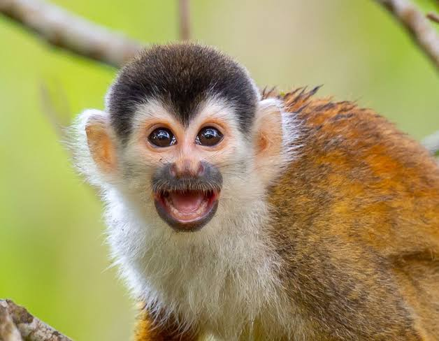
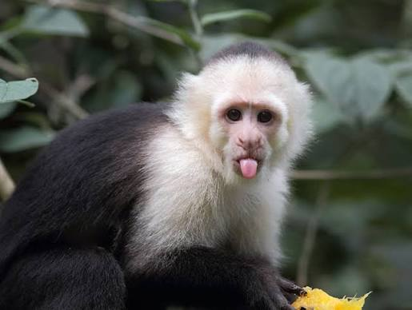
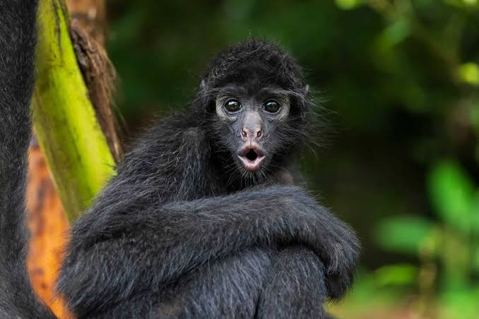

About of monkeys:
Мавпи, яких в інтернеті часто ласкаво називають бібізянами, є одними з найрозумніших та найдивовижніших істот нашої планети. Наприклад, чи знав ти, що карликова ігрунка є найменшою мавпою у світі, яка легко поміщається на долоні й важить не більше ста грамів, тоді як гігантська горила може виростати до двох метрів заввишки? Попри популярні стереотипи, банани насправді не є основою раціону всіх мавп, адже багатьом видам потрібне різноманітне харчування.

Натомість у дикій природі вони дуже прискіпливі до їжі, наприклад, повністю очищають часточки грейпфрута від гіркої білої м'якоті перед споживанням. Ці тварини мають неймовірний рівень соціальної відповідальності, тому якщо маленька мавпочка втрачає маму, турботу про неї можуть брати на себе інші члени її групи. Вони також володіють високим інтелектом, здатні впізнавати себе у дзеркалі та навіть вивчати людську мову жестів. Деякі примати навчилися пристосовуватися до суворих умов, як-от японські макаки, які ніжаться в гарячих геотермальних джерелах, щоб урятуватися від зимових морозів.

